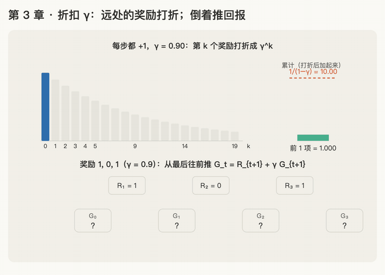

第 3 章 · 折扣 discount γ：远处的奖励打个折
本章回答：没完没了的任务，回报会加到无穷大，怎么办？为什么"明天的 1 块钱不如今天的 1 块钱"？回报能不能倒着算？
讲解日期：2026-11-13 · 上一章：第 2 章 奖励与回报 · 下一章：第 4 章 概率与期望
对应原文：Sutton & Barto §3.3 后半（L4016–L4098，式 3.8–3.10）、§3.4 Unified Notation（L4159–L4228，式 3.11）
本章缩写：γ：希腊字母 gamma（读"伽马"），discount rate（折扣率）；\(G_t\) 见第 2 章；\(k\)：从现在往后数第几个奖励。全部缩写见 附录 · 缩写与术语表
讲解
第一步：明天的 1 块钱不如今天的 1 块钱（2026-11-13）
类比：打折券。 商场发券：今天用值 1 块；明天用只值 0.9 块；后天 0.81 块……每晚一天，再打九折。
强化学习也这样给未来的奖励打折。选一个 0 到 1 之间的数 γ（gamma，折扣率）：
- 下一步的奖励按原价算；
- 再往后一步的奖励乘 γ；
- 再往后一步乘 \(\gamma^2\)（γ 乘 γ）；
- 往后第 k 步乘 \(\gamma^k\)。
为什么要打折，有两个理由：
- 解决无穷大（第 2 章第三步）：持续任务每步 +1，不打折就是 \(1+1+1+\cdots=\infty\)；打折以后越往后越小，加起来是个有限的数（第三步算给你看）；
- 越远越不确定：明天的事比一年后的事更有把握，远处的奖励说不定拿不到，打点折扣更稳妥。
一句话：γ 是每往后一步打的折，往后第 k 步的奖励乘 \(\gamma^k\)。
第二步：折扣回报的公式，一个个符号读（2026-11-13）
加上折扣，回报变成（式 3.8，L4024–L4041）：
怎么读右边：
- \(\sum_{k=0}^{\infty}\)："k 从 0 一直加到无穷"；
- \(R_{t+k+1}\)：k = 0 时是 \(R_{t+1}\)，k = 1 时是 \(R_{t+2}\)……就是"往后第 k 个"奖励；
- \(\gamma^k\)：给它打的折。k = 0 时 \(\gamma^0 = 1\)（Transformer 讲义第 5 章：任何数的 0 次方是 1），所以第一个奖励按原价。
用数字算一遍：γ = 0.9，奖励 \(R_1 = 1, R_2 = 0, R_3 = 1\)，然后结束。
不打折（第 2 章）是 1 + 0 + 1 = 2；打折以后第 3 个奖励只值 0.81，总数变成 1.81。
γ 取两头会怎样（L4044–L4052）：
| γ | 意思 | 例子的 \(G_0\) |
|---|---|---|
| 0 | 近视 myopic：只看下一步，后面全打成 0 | 1 |
| 0.9 | 看得比较远 | 1.81 |
| 1 | 不打折，就是第 2 章的回报 | 2 |
γ 越接近 1，智能体越"有远见 farsighted"。CS 285 作业里常用 0.99。
一句话：\(G_t = \sum_k \gamma^k R_{t+k+1}\)；γ = 0 只看眼前，γ = 1 不打折。
第三步：打折以后，无穷多项也能加出有限的数（2026-11-13）
问题：持续任务每步都 +1，γ = 0.9，回报是多少？
一项比一项小。书里给出公式（式 3.10，L4082–L4098）：
γ = 0.9 时 \(\frac{1}{1-0.9} = \frac{1}{0.1} = 10\)。
为什么是这个数（推导很短）：设总数是 \(X = 1 + \gamma + \gamma^2 + \cdots\)。两边乘 γ：\(\gamma X = \gamma + \gamma^2 + \cdots\)，正好是 X 去掉开头的 1。所以 \(X - \gamma X = 1\)，\(X = \frac{1}{1-\gamma}\)。
手算验证一部分：
| 加到第几项 | 累计 |
|---|---|
| 1 项 | 1 |
| 2 项 | 1.9 |
| 3 项 | 2.71 |
| 10 项 | 6.51 |
| 50 项 | 9.95 |
| 1000 项 | 10.00 |
越加越接近 10，但永远不会超过。
一个好用的直觉：\(\frac{1}{1-\gamma}\) 大致是智能体"看多远"。γ = 0.9 大约看 10 步，γ = 0.99 大约看 100 步。
一句话：只要 γ < 1、奖励有上限，无穷多项也加得出有限的数；每步 +1 时总数是 \(\frac{1}{1-\gamma}\)。
第四步：倒着算：\(G_t = R_{t+1} + \gamma G_{t+1}\)（2026-11-13）
这是全书最重要的一个式子之一（式 3.9，L4053–L4078）：
怎么来的：把 \(G_t\) 写开，从第二项起提出一个 γ：
括号里正好就是 \(G_{t+1}\)。
白话：今天往后的总价值 = 明天马上拿的 + 打个折的"明天往后的总价值"。
倒着算最省事：先定 \(G_T = 0\)（L4077–L4078），再一步步往前推。还是 γ = 0.9，奖励 1, 0, 1：
| 步 | 式子 | 结果 |
|---|---|---|
| \(G_3\) | 结束了 | 0 |
| \(G_2\) | \(R_3 + 0.9 \times G_3 = 1 + 0\) | 1 |
| \(G_1\) | \(R_2 + 0.9 \times G_2 = 0 + 0.9\) | 0.9 |
| \(G_0\) | \(R_1 + 0.9 \times G_1 = 1 + 0.81\) | 1.81 |
和第二步一项项加的 1.81 一样，但每一步只做一次乘法加法。后面第 8 章的 Bellman 方程、第 15 章的 TD，全都从这个式子长出来。
分幕和持续统一起来（§3.4，L4181–L4207）：把"一局结束"看成走进一个吸收状态：之后永远待在那里，奖励永远是 0。这样分幕任务的回报也能写成无穷和，后面的奖励全是 0，不影响结果。所以全书都用式 3.8 这一个公式。
一句话：\(G_t = R_{t+1} + \gamma G_{t+1}\)，从 \(G_T = 0\) 倒着推，一步一个乘加。
动画演示：折扣怎么让远处的奖励缩小；倒着推回报

可交互版：animations/l03-discount.html（要能点按钮、拖滑块，需要用本地服务打开，见 animations/README.md"跑起来看"）。
怎么看：
- 上面：每步都 +1，柱子高度 = 打折后的值 \(\gamma^k\)，越往右越矮；
- 右边的累计值一路涨，但停在 \(\frac{1}{1-\gamma}\) 下面（第三步）；
- 拖滑块改 γ：γ 越小柱子掉得越快，"看得越近"；
- 下面：奖励 1, 0, 1 从右往左倒着推 \(G_t = R_{t+1} + \gamma G_{t+1}\)（第四步）。
练习与作答记录
题 1：γ = 0.5，奖励 \(R_1 = 4, R_2 = 2, R_3 = 8\)，然后结束。用第四步的方法倒着算 \(G_3, G_2, G_1, G_0\)。
作答：（待作答）
题 2：每步奖励都是 +2，γ = 0.8，无穷多步。回报 \(G_0\) 是多少？（提示：先算 \(\frac{1}{1-\gamma}\)。）
作答：（待作答）
题 3：γ = 0 时，\(G_t\) 等于什么？这时候智能体会有什么毛病？
作答：（待作答）
口诀
往后一步打一折，第 k 步乘 γ 的 k 次方；
γ 为零最近视，γ 为一不打折；
每步加一总数是 1/(1−γ)；
今天总价 = 明天到手 + γ × 明天往后，倒着推最省事。
本章复习卡片
- R05（折扣回报 \(G_t = \sum_k \gamma^k R_{t+k+1}\)；γ 的两头）
- R06（递推 \(G_t = R_{t+1} + \gamma G_{t+1}\)；每步 +1 时的总数 \(\frac{1}{1-\gamma}\)）
附录 · 延伸阅读
留给以后深入学习用，不影响本章主线。★ 是建议先读的。L 行号指
materials/text/books/sutton-barto-RLbook2020.txt。
推荐阅读
| 读什么 | 读哪里 | 读它为了什么 |
|---|---|---|
| ★ Sutton & Barto §3.3 后半 | L4016–L4098（式 3.8–3.10） | 本章原文：折扣、近视与远见、递推、几何级数 |
| Sutton & Barto §3.3 例 3.4 | L4109–L4128 | 倒立摆：同一个任务当分幕（每步 +1）或当持续（失败 −1 + 折扣）两种写法 |
| Sutton & Barto §3.4 | L4159–L4228（式 3.11） | 吸收状态：把分幕和持续统一成一个公式（第四步末尾） |
| Sutton & Barto 习题 3.8、3.9 | L4142–L4148 | 倒着算回报的练习（书后无答案，可以用本章代码核对） |
| CS 285 第 6 讲 | lec-06.txt L76–L100（Discount factors） |
课程里为什么在策略梯度里也加 γ |
数学原理
- 几何级数：\(\sum_{k=0}^{\infty}\gamma^k = \frac{1}{1-\gamma}\)（|γ| < 1）；推导：\(X - \gamma X = 1\)。
- 有界奖励 ⇒ 回报有界：若每步 \(|R| \le R_{max}\)，则 \(|G_t| \le \frac{R_{max}}{1-\gamma}\)。
- 递推：\(G_t = R_{t+1} + \gamma G_{t+1}\)，边界 \(G_T = 0\)。动态规划（第 10–12 章）和时序差分（第 15 章）都建立在它上面。
- 有效视野：\(\frac{1}{1-\gamma}\) 常被叫做 effective horizon（有效视野）：γ = 0.99 ≈ 100 步。
公式清单
| 公式 | 意思 |
|---|---|
| \(G_t = \sum_{k=0}^{\infty}\gamma^k R_{t+k+1}\) | 折扣回报（式 3.8） |
| \(G_t = R_{t+1} + \gamma G_{t+1}\) | 递推（式 3.9） |
| \(\sum_{k=0}^{\infty}\gamma^k = \frac{1}{1-\gamma}\) | 每步 +1 的回报（式 3.10） |
| \(G_t = \sum_{k=t+1}^{T}\gamma^{k-t-1}R_k\) | 分幕 / 持续统一写法（式 3.11） |
代码对照：把本章的数字用代码算一遍
代码在
cs285-deep-rl/solutions/chapter-code/ch03_discount.py，测试tests/test_ch01_04.py。
同一章的 Jupyter notebook：cs285-deep-rl/solutions/chapter-code/notebooks/ch03_discount.ipynb（讲解和代码放在一起，一格一格边读边跑；代码都写在格子里，Colab 也能直接打开）。
bash cd cs285-deep-rl/solutions/chapter-code uv run python ch03_discount.py
| 讲义 | 代码 | 跑出来 |
|---|---|---|
| 一项项加 | discounted_return([1, 0, 1], 0.9) |
1.81 |
| 倒着推 | returns_backward([1, 0, 1], 0.9) |
[1.81, 0.9, 1.0, 0.0] |
| γ = 0 / γ = 1 | discounted_return(r, 0.0) / (r, 1.0) |
1.0 / 2.0 |
| 每步 +1 加 1000 项 | discounted_return([1] * 1000, 0.9) |
10.0（= 1/(1−0.9)） |
关键几行：
G = [0.0] * (len(rewards) + 1) # 最后一个 G_T = 0
for t in reversed(range(len(rewards))): # 从后往前
G[t] = rewards[t] + gamma * G[t + 1]
代码里才看得到的：倒着推的循环在后面会反复出现：CS 285 HW2 的 reward-to-go（第 21 章）、GAE（第 22 章）都是同一个 reversed 循环。